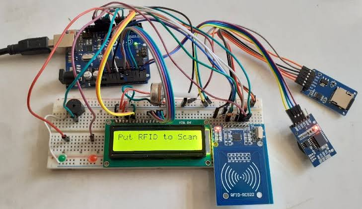
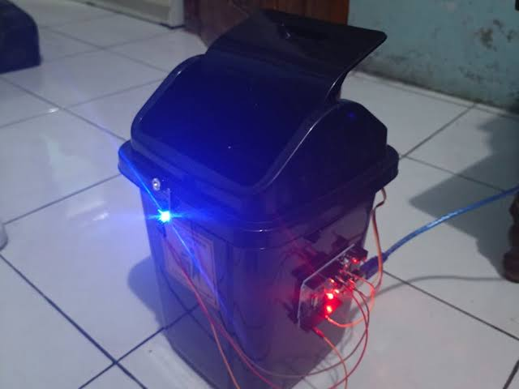

I'm Juanie Cuenca, a student at Gen. T. Deleon National High School. This website highlights my projects, achievements only.
High school isn't just about academics it’s also about creating memories, enjoying, have fun with friends and making it happiest experience in our life.
Feel free to explore thank you for visiting!
Hi, i'm Juanie Cuenca a student at Gen. T. Deleon National High School passionate about technology, innovation, and leadership.
i started learning programming and Arduino projects during the pandemic which led me to explore web development and artificial intelligence chatbots. back in Grade 9 (2023), i developed an AI chatbot which i later sold to a US-based company due to the high cost of maintaining domain.
currently as a Grade 11 student i am developing our school website, which will be integrated with an AI assistant. This platform aims to help students and parents with online school registration providing a more convenient alternative to walk-in applications.
additionally, I am working on GenDance an RFID-based attendance system that will track student attendance and notify teachers if students leave during class hours if i win the election, i plan to fully implement these tech innovations to modernize our school.
as a tech-driven leader, my goal is to make technology more accessible, improve student engagement and create a more connected and innovative school environment.
1. Technology for All Students Introduce basic technology education for students. Provide training sessions on digital literacy and cybersecurity.
2. GenDance: Smart Attendance System Implement RFID-based attendance for easy tracking. Develop an alert system to notify teachers if students leave during class hours.
3. School Website & AI Assistant Create an official school website for announcements, schedules, and student resources. Integrate an AI assistant to help students with common inquiries.
4. Inclusive & Safe Spaces Establish a dedicated LGBTQ+ Comfort Room (CR) to ensure a discrimination-free space.
5. Donation Drive for Students in Need Organize a donation program for school supplies, uniforms, and other necessities.
6. More Exciting School Events Host eSports tournaments to encourage student engagement. Arrange talent showcases to highlight student creativity and skills. Improve school celebrations and activities to make them more enjoyable.
Grade 9 President
Outstanding Leadership in Museo Pambata
Grade 11 Classroom President
Developed AI Chatbot in 2023 (at 15 years old)
Won Street Dance Tatak Pinoy 2019
Won Best Editor in 2020 (Edit Pinas)
Won Alight Motion Editor in Edit Pinas
Earned from TikTok Editing (363K Followers) in 2021
Created Grading System (Demo)
Developed Pixelated Games
Graduated in Robotics (UE Caloocan)
Won Against Quezon City in Hiphop Dance
Completed Programming Course
Led Classmates in Galaw Pilipinas and Won
Developed School Websites
Developed Arduino Projects
Best in Honesty (Grade 9)
School Website are still developing here some of my projects:
 